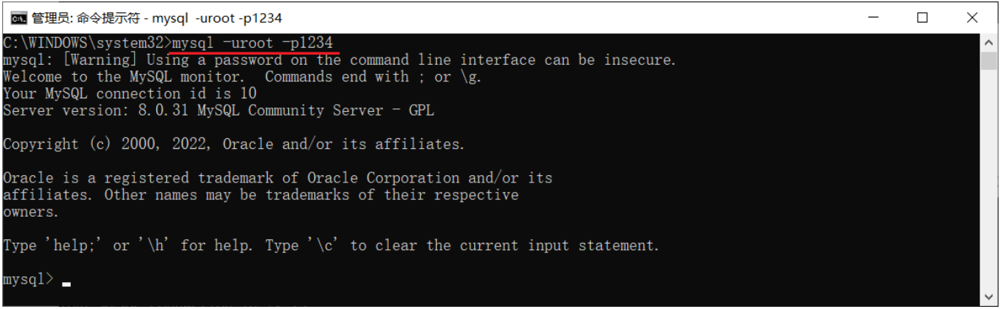
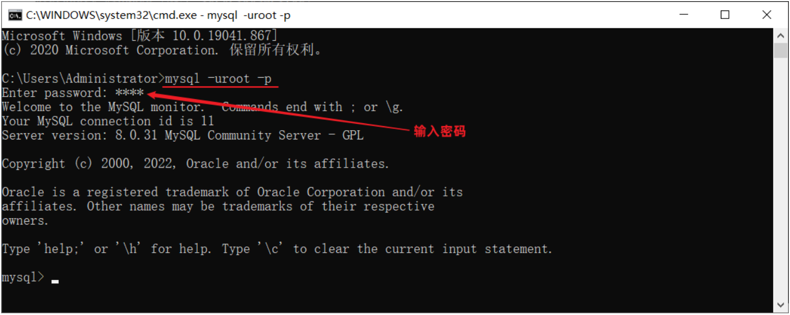
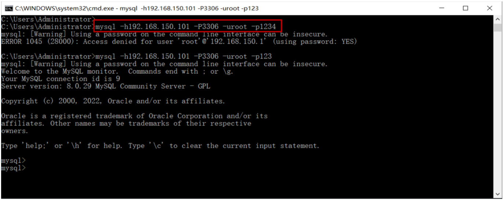
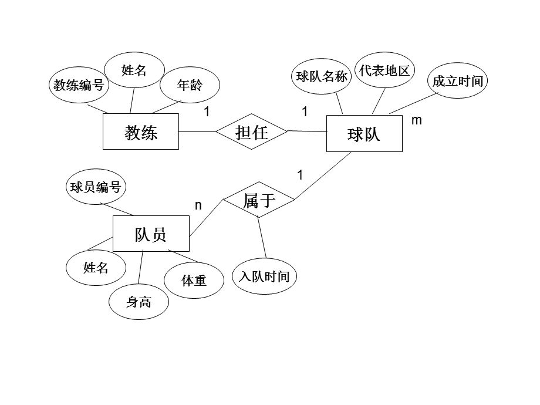
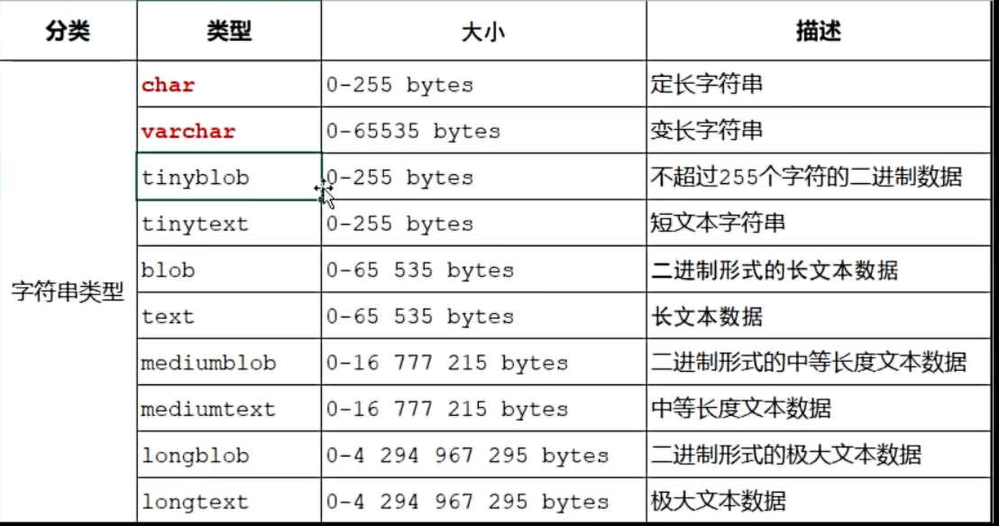
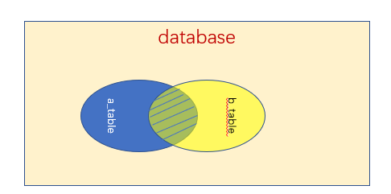
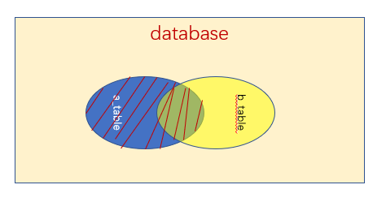
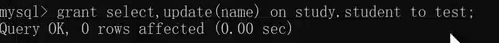
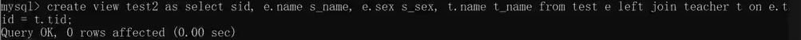
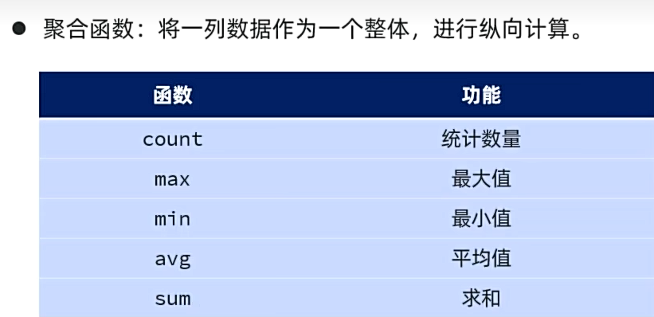

MySQL：表设计、约束与查询
文件I/O来将数据保存到本地
数据库专门用于快速查找想要的数据，便捷地插入、修改和删除数据
常见的数据库有很多种，包括但不限于：
- MySQL - 免费，用的最多的，开源数据库，适用于中小型
- Microsoft SQL Server - 收钱的，但是提供技术支持，适用于Windows Server
- Oracle - 收钱的，大型数据库系统
介绍
MySQL服务器启动完毕后，然后再使用如下指令，来连接MySQL服务器：
mysql -hIP地址 -P端口号-u用户名 -p密码 [-h数据库服务器的IP地址 -P端口号]
- -h 参数不加，默认连接的是本地 127.0.0.1 的MySQL服务器
- -P 参数不加，默认连接的端口号是 3306
上述指令，可以有两种形式：
- 密码直接在-p参数之后直接指定 （这种方式不安全，密码直接以明文形式出现在命令行）

- 密码在-p回车之后，在命令行中输入密码，然后回车

企业使用方式(了解)
上述的MySQL服务器我们是安装在本地的，这个仅仅是在我们学习阶段，在真实的企业开发中，MySQL数据库服务器是不会在我们本地安装的，是在公司的服务器上安装的，而服务器还需要放置在专门的IDC机房中的，IDC机房呢，就需要保证恒温、恒湿、恒压，而且还要保证网络、电源的可靠性(备用电源及网络)。

那我们要想使用服务器上的这台MySQL服务器，就需要在我们的电脑上去远程连接这台MySQL 。 而服务器上安装的MySQL数据库呢，并不是你一个人在访问，我们项目组的其他开发人员也是需要访问这台MySQL的。
接下来，就来演示一下，通过MySQL的客户端命令行，如何来连接服务器上部署的MySQL ：
开发中需要远程连接 数据库 需要使用的命令 ;
mysql [-h数据库服务器的IP地址 -P端口号] -u用户名 -p密码

数据模型
数据模型与现实世界中的模型一样，是对现实世界数据特征的一种抽象。实际上，我们之前学习的类就是对现实世界数据的一种抽象，比如一个学生的特征包括姓名，年龄，年级，学号，专业等，这些特征也称为实体的一种属性，属性具有以下特点：
- 属性不可再分
- 一个实体的属性可以有很多个
- 用于唯一区分不同实体的的属性，称为Key，比如每个同学的学号都是不一样的
- 属性取值可以有一定的约束，比如性别只能是男或是女
实体或是属性之间可以具有一定的联系，比如一个老师可以教很多个学生，而学生相对于老师就是被教授的关系；又比如每个同学都有一个学号与其唯一对应，因此学号和学生之间也有一种联系。而像一个老师教多个学生的联系就是一种一对多的联系（1:n），而学号唯一对应，就是一种一对一的联系（1:1）；每一个老师不仅可以教多个学生，每一个学生也可以有多个教师，这就是一种多对多的联系（n:m）
MySQL就是一种关系型数据库，通过使用关系型数据库，我们就可以很好地存储这样带有一定联系的数据。

数据库的创建
既然了解了属性和联系，那么我们就来尝试创建一个数据库，并在数据库中添加用于存放数据的表，每一张表都代表一种实体的数据。首先我们要明确，我们需要创建什么样子的表：
- 学生表：用于存放所有学生的数据，学生（学号，姓名，性别）
- 教师表：用于存放所有教师的数据，教师（教师号，姓名）
- 授课表：用于存放教师与学生的授课信息，授课（学号，教师号）
其中，标注下划线的属性，作为Key，用于区别于其他实体数据的唯一标记。
数据库的规范化
创建数据库 : utf8mb4支持中文和4字节emoji , 优先选择 ,排序general_ci;
创建表单 : 通过设置键 , 会限制重复键插入 ,通过添加字段 添加表单 , 创建关系表 , 点击加号.
创建查询 : 查询语法 : SELECT * FROM 表单名 WHERE 表单中存在的列名 = '小夏' ;
* 获取多个数值 , =后只能匹配一个数值
关系表相关查询语法 : SELECT * FROM 数据表1 INNER JOIN 关系表 ON 数据表1.数据列 = 关系 表.相关数据列 WHERE 关系表.匹配数据列 = (SELECT 数据表2数据类型 FROM 数据表2 WHERE 内部数据类型 = '小夏')
数据库的规范化
第一范式（1NF）
第一范式是指数据库的每一列都是不可分割的基本数据项，而下面这样的就存在可分割的情况：
- 学生（姓名，电话号码）
电话号码实际上包括了家用座机电话和移动电话，因此它可以被拆分为：
- 学生（姓名，座机号码，手机号码）
满足第一范式是关系型数据库最基本的要求！
第二范式（2NF）
第二范式要求表中必须存在主键，且其他的属性<u>必须完全依赖于主键</u>，比如：
- 学生（学号，姓名，性别）
学号是每个学生的唯一标识，每个学生都有着不同的学号，因此此表中存在一个主键，并且每个学生的所有属性都依赖于学号，学号发生改变就代表学生发生改变，姓名和性别都会因此发生改变，所有此表满足第二范式。
第三范式（3NF）
在满足第二范式的情况下，所有的属性都不传递依赖于主键，满足第三范式。
- 学生借书情况（借阅编号，学生学号，书籍编号，书籍名称，书籍作者）
实际上书籍编号依赖于借阅编号，而书籍名称和书籍作者依赖于书籍编号，因此存在传递依赖的情况，我们可以将书籍信息进行单独拆分为另一张表：
- 学生借书情况（借阅编号，学生学号，书籍编号）
- 书籍（书籍编号，书籍名称，书籍作者）
这样就消除了传递依赖，从而满足第三范式。
BCNF
BCNF作为第三范式的补充，假设仓库管理关系表为StorehouseManage(仓库ID, 存储物品ID, 管理员ID, 数量)，且有一个管理员只在一个仓库工作；一个仓库可以存储多种物品。这个数据库表中存在如下决定关系：
(仓库ID, 存储物品ID) →(管理员ID, 数量)
(管理员ID, 存储物品ID) → (仓库ID, 数量)
所以，(仓库ID, 存储物品ID)和(管理员ID, 存储物品ID)都是StorehouseManage的候选关键字，表中的唯一非关键字段为数量，它是符合第三范式的。但是，由于存在如下决定关系：
(仓库ID) → (管理员ID)
(管理员ID) → (仓库ID)
即存在关键字段决定关键字段的情况，如果修改管理员ID，那么就必须逐一进行修改，所以其不符合BCNF范式。
解决方案 : 设计关键字表 , 实现互相关联
认识SQL语句(命令行)
结构化查询语言（Structured Query Language）简称SQL，这是一种特殊的语言，它专门用于数据库的操作。每一种数据库都支持SQL，但是他们之间会存在一些细微的差异，因此不同的数据库都存在自己的“方言”。
SQL语句不区分大小写（关键字推荐使用大写），它支持多行，并且需要使用;进行结尾！
SQL也支持注释，通过使用--或是#来编写注释内容，也可以使用/*来进行多行注释。
我们要学习的就是以下四种类型的SQL语言：
- 数据查询语言（Data Query Language, DQL）基本结构是由SELECT子句，FROM子句，WHERE子句组成的查询块。
- 数据操纵语言（Data Manipulation Language, DML）是SQL语言中，负责对数据库对象运行数据访问工作的指令集，以INSERT、UPDATE、DELETE三种指令为核心，分别代表插入、更新与删除，是开发以数据为中心的应用程序必定会使用到的指令。
- 数据库定义语言DDL(Data Definition Language)，是用于描述数据库中要存储的现实世界实体的语言。
- DCL（Data Control Language）是数据库控制语言。是用来设置或更改数据库用户或角色权限的语句，包括（grant,deny,revoke等）语句。在默认状态下，只有sysadmin,dbcreator,db_owner或db_securityadmin等人员才有权力执行DCL。
我们平时所说的CRUD其实就是增删改查（Create/Retrieve/Update/Delete）
数据库定义语言（DDL）
数据库操作
我们可以通过create database来创建一个数据库：
sql****复制代码
create database 数据库名
为了能够支持中文，我们在创建时可以设定编码格式：当前自动设计为utf8-mb4
sql****复制代码
CREATE DATABASE (IF NOT EXISTS不存在时创建) 数据库名 DEFAULT CHARSET utf8 COLLATE utf8_general_ci(排序规则);
如果我们创建错误了，我们可以将此数据库删除，通过使用drop database来删除一个数据库：
sql****复制代码
drop database 数据库名
创建表(先要用use 数据库选取执行)
数据库创建完成后，我们一般通过create table语句来创建一张表：
sql****复制代码
实例代码 :
create table user(
id int comment 'ID , 唯一标识' ,
username varchar(50) comment '用户名' ,
name varchar(10) comment '姓名' ,
age int comment '年龄' ,
gender char(1) comment '性别'
)comment '用户信息表' ;
create table 表名(列名 数据类型[列级约束条件],
列名 数据类型[列级约束条件],
...
表级约束条件
CREATE TABLE employees (
name(表格头名) INT,
name(表格头名) VARCHAR(10),
name(表格头名) VARCHAR(50) NOT NULL,
email VARCHAR(100),
age INT,
salary DECIMAL(10,2) DEFAULT 0.00,
hire_date DATE DEFAULT CURRENT_DATE,
dept_id INT,
manager_id INT,
-- ========== 表级约束开始 ==========
-- 1. 如果列级没定义主键，可以在这里定义
PRIMARY KEY (emp_id),
-- 2. 复合唯一约束（多列组合唯一）
UNIQUE (emp_code, email),
-- 3. 完整的外键定义（带级联操作）
FOREIGN KEY (dept_id)
REFERENCES departments(dept_id)
ON DELETE SET NULL,
FOREIGN KEY (manager_id)
REFERENCES employees(emp_id) -- 自引用
ON DELETE SET NULL,
-- 4. 命名约束
CONSTRAINT ck_valid_age
CHECK (age >= 18 AND age <= 65),
CONSTRAINT ck_salary_range
CHECK (salary >= 0 AND salary <= 1000000),
-- 5. 多列业务规则检查
CHECK (
(dept_id = 1 AND salary <= 50000) OR
(dept_id != 1 AND salary <= 200000)
)
);
SQL数据类型
以下的数据类型用于字符串存储：
- char(n)定长字符串 : 可以存储任意字符串，但是是固定长度为n，如果插入的长度小于定义长度时，则用空格填充。性能高, 但占用磁盘空间 ;
- varchar(n)最多占用 n 个存储空间 , 也可以存储任意数量字符串，长度不固定，但不能超过n，不会用空格填充。[建议使用] , 性能低 , 磁盘时间占用少
以下数据类型用于存储数字：
- tinyint用于存储小的整数，范围在 (-32768，32767)
- int用于存储一般的整数，范围在 (-2147483648，2147483647)
- bigint用于存储大型整数，范围在 (-9,223,372,036,854,775,808，9,223,372,036,854,775,807)
- float用于存储单精度小数
- double用于存储双精度的小数
以下数据类型用于存储时间：
- date存储日期
- time存储时间
- year存储年份
- datetime用于混合存储日期+时间精确到秒
可以设计enum( 可以提供选择的选项 ) not null default '默认数值' ;
二进制数据可以存储图片和视频 ;

列级约束条件
列级约束有六种：主键Primary key(私教)[内部唯一表示][学号]、(表级)外键foreign key(外教)[可以和外部创建关系][班级] 、唯一 unique、检查 check （MySQL不支持）、默认default 、非空/空值 not null/ null
表级约束条件
表级约束有四种：主键、外键、唯一、检查 [ 添加外键约束,防止数据乱入 ]
现在我们通过SQL语句来创建我们之前提到的三张表。
sql****复制代码
CONSTRAINT 外键名 FOREIGN KEY (从表字段名) REFERENCES 主表名(主表字段名)
列级设计外键 : mysql> create table teach (tid int not null ,
-> sid int not null ,
-> FOREIGN KEY (tid) REFERENCES teacher(tid));
表级设计外键 : mysql> CREATE TABLE teach1 (
-> tid INT NOT NULL,
-> sid INT NOT NULL,
-> CONSTRAINT fk_teach_tid FOREIGN KEY (tid) REFERENCES teacher(tid)
-> );
修改表
如果我们想修改表结构，我们可以通过alter table来进行修改：
ALTER TABLE transactions AUTO_INCREMENT = 17; 使用 这条命令实现修改自增 id
sql****复制代码
ALTER TABLE 表名 ADD 新列名 数据类型[列级约束条件]]
[DROP COLUMN 列名[restrict|cascade]]
[ALTER COLUMN 列名 新数据类型]
-- 1. 添加简单列
ALTER TABLE employees
ADD birth_date DATE;
-- 2. 添加带约束的列
ALTER TABLE users
ADD phone_number VARCHAR(20) UNIQUE;
-- 3. 添加带默认值的列
ALTER TABLE orders
ADD created_at TIMESTAMP DEFAULT CURRENT_TIMESTAMP;
-- 4. 添加非空列（表必须有数据时需小心）
ALTER TABLE products
ADD stock_quantity INT NOT NULL DEFAULT 0;
-- 5. 一次添加多列
ALTER TABLE students
ADD (
email VARCHAR(100) UNIQUE,
phone VARCHAR(20),
enrollment_date DATE DEFAULT CURRENT_DATE
);
我们可以通过ADD来添加一个新的列，通过DROP来删除一个列，不过我们可以添加restrict或cascade，默认是restrict，表示如果此列作为其他表的约束或视图引用到此列时，将无法删除，而cascade会强制连带引用此列的约束、视图一起删除。还可以通过ALTER来修改此列的属性。
示例 :
mysql> alter table teacher add gender enum ('男','女') not null default '男' ;
删除表
我们可以通过drop table来删除一个表：和删库有的一拼
sql****复制代码
DROP TABLE 表名[restrict|cascade]
其中restrict和cascade上面的效果一致。
数据库操纵语言（DML）
前面我们已经学习了如何使用SQL语句来创建、修改、删除数据库以及表，而如何向数据库中插入、删除、更新数据，将是本版块讨论的重点。
插入数据
MySQL : 特性 value == values 功能完全相同 注意: 在其他的SQL语句中实现插入数据 , 一般都只使用 VALUES ; VALUE
通过使用insert into语句来向数据库中插入一条数据（一条记录）：
sql****复制代码
mysql> insert into student values(114514,'ws','男');
mysql> insert into student(sid,name) values(11222,'xiao');
mysql> insert into student(sid,name) values(11212,'xiao'),(1212,'xuan'),(2112,'zhao');
INSERT INTO 表名 VALUES(值1, 值2, 值3)
如果插入的数据与列一一对应，那么可以省略列名，但是如果希望向指定列上插入数据，就需要给出列名：
sql****复制代码
INSERT INTO 表名(列名1, 列名2) VALUES(值1, 值2)
我们也可以一次性向数据库中插入多条数据：( 都是一一对应的 , 需要注意数据类型 )
sql****复制代码
INSERT INTO 表名(列名1, 列名2) VALUES(值1, 值2), (值1, 值2), (值1, 值2)
修改数据
我们可以通过update语句来更新表中的数据：
mysql> update student set name='xiao1'where sid = 114514 ;
sql****复制代码
UPDATE 表名 SET 列名=值,... WHERE 条件
注意，SQL语句中的等于判断是=
警告： 如果忘记添加WHERE字句来限定条件，将使得整个表中此列的所有数据都被修改！
删除数据
我们可以通过使用delete来删除表中的数据：
sql****复制代码
DELETE FROM 表名
通过这种方式，将删除表中全部数据，我们也可以使用where来添加条件，只删除指定的数据：
sql****复制代码
DELETE FROM 表名 WHERE 条件
数据库查询语言（DQL）
创建的 算和差的时候防止 NULL 污染数据
使用 COALESCE(参数1 , 参数2 , 参数3) , 实现返回后续参数列表中第一个不为 NULL 的数值 ;
单表查询
mysql> select * from student ;全部查询 ;
mysql> select name,gender from student ;
mysql> select distinct name from student ;去重查询
单表查询是最简单的一种查询，我们只需要在一张表中去查找数据即可，通过使用select语句来进行单表查询：
sql****复制代码
-- 指定查询某一列数据
SELECT 列名 FROM 表名
-- 会以别名显示此列
SELECT 列名 别名 FROM 表名
-- 查询所有的列数据
SELECT * FROM 表名
-- 只查询不重复的值
SELECT DISTINCT 列名 FROM 表名
我们也可以添加where字句来限定查询目标：
sql****复制代码
SELECT * FROM 表名 WHERE 条件
常用查询条件
mysql> select * from student where gender = '男' ;
mysql> select * from student where name not in ('ws','xiao');
mysql> SELECT * FROM student WHERE sid LIKE '%14%';(要加'')
mysql> select * from student WHERE sid LIKE '%14%' or sid = '114514';
- 一般的比较运算符，包括=、>、<、>=、<=、!=等。
- 是否在集合中：in、not in
- 字符模糊匹配：like，not like ( 列名字 + like / not like nb )
使用%来模糊化处理 , %3(以3结尾)(可以前后都加) ;
- 多重条件连接查询：and、or、not
我们来尝试使用一下上面这几种条件。
排序查询
mysql> select * from student order by gender asc ,sid desc ;
我们可以通过order by来将查询结果进行排序：
sql****复制代码
SELECT * FROM 表名 WHERE 条件 ORDER BY 列名 ASC|DESC
使用ASC表示升序排序，使用DESC表示降序排序，默认为升序。
我们也可以可以同时添加多个排序：
sql****复制代码
SELECT * FROM 表名 WHERE 条件 ORDER BY 列名1 ASC|DESC, 列名2 ASC|DESC
这样会先按照列名1进行排序，每组列名1相同的数据再按照列名2排序。
聚集函数
mysql> select count(*) from student ; //distance 的去重逻辑是一列数中数值上的重复 ;
mysql> select count(distinct gender) from student ;去重
聚集函数一般用作统计，包括：
count(distinct *)统计所有的行数（distinct表示去重再统计，下同）count(distinct 列名)统计某列的值总和sum(distinct 列名)求一列的和（注意必须是数字类型的）avg(distinct 列名)求一列的平均值（注意必须是数字类型）max(distinct 列名)求一列的最大值min(distinct 列名)求一列的最小值
一般聚集函数是这样使用的：
sql****复制代码
SELECT count(distinct 列名) FROM 表名 WHERE 条件 [ distinct会自动去重 ]
分组和分页查询
mysql> select count(*) from student group by gender ;(按照性别分)
mysql> select count(*) from student group by gender having gender = '男' ; 只保留性别为男 ;
mysql> select * from student limit 3 ;
mysql> select * from student limit 3,3 ;在前三个后面再查三个 ;
通过使用group by来对查询结果进行分组，它需要结合聚合函数一起使用：
sql****复制代码
SELECT sum(*) FROM 表名 WHERE 条件 GROUP BY 列名
我们还可以添加having来限制分组条件：
sql****复制代码
SELECT sum(*) FROM 表名 WHERE 条件 GROUP BY 列名 HAVING 约束条件
我们可以通过limit来限制查询的数量，只取前n个结果：
sql****复制代码
SELECT * FROM 表名 LIMIT 数量
我们也可以进行分页：
sql****复制代码
SELECT * FROM 表名 LIMIT 起始位置,数量
多表查询
mysql> select * from student,teacher ; 返回笛卡积
mysql> select * from student,teacher where tid = 1;
若是不独有的属性可以使用列名.属性 ;
多表查询是同时查询的两个或两个以上的表，多表查询会提通过连接转换为单表查询。
sql****复制代码
SELECT * FROM 表1, 表2
直接这样查询会得到两张表的笛卡尔积，也就是每一项数据和另一张表的每一项数据都结合一次，会产生庞大的数据。
sql****复制代码
SELECT * FROM 表1, 表2 WHERE 条件
这样，只会从笛卡尔积的结果中得到满足条件的数据。
注意： 如果两个表中都带有此属性吗，需要添加表名前缀来指明是哪一个表的数据。
自身连接查询
mysql> select * from student,student;
ERROR 1066 (42000): Not unique table/alias: 'student' ;
需要起别名; , 见下 :
mysql> select * from student t1,student t2;
mysql> select t1.name from student t1,student t2 where t1.sid = t2.sid; 添加限制条件 ;
mysql> select t1.name '姓名' from student t1,student t2 where t1.sid = t2.sid; 可以直接在后面加别名 ;
自身连接，就是将表本身和表进行笛卡尔积计算，得到结果，但是由于表名相同，因此要先起一个别名：
sql****复制代码
SELECT * FROM 表名 别名1, 表名 别名2
其实自身连接查询和前面的是一样的，只是连接对象变成自己和自己了。
外连接查询
mysql> select * from student inner join teach on student.sid = teach.sid;
mysql> select * from student left join teach on student.sid = teach.sid;
mysql> select * from student left join teach on student.sid = teach.sid;
-> left join teacher on teach.tid = teacher.tid ;
一次展示三张表 ;
外连接就是专门用于联合查询情景的，比如现在有一个存储所有用户的表，还有一张用户详细信息的表，我希望将这两张表结合到一起来查看完整的数据，我们就可以通过使用外连接来进行查询，外连接有三种方式：
- 通过使用
inner join进行内连接，只会返回两个表满足条件的交集部分： - select * from 表1 inner join 表3 on 表2 .列名 = 表三.列名 ;

- 通过使用
left join进行左连接，不仅会返回两个表满足条件的交集部分，也会返回左边表中的全部数据，而在右表中缺失的数据会使用null来代替（右连接right join同理，只是反过来而已，这里就不再介绍了）：

嵌套查询
mysql> select * from student left join teach on student.sid = teach.sid
-> left join teacher on teach.tid = teacher.tid where teacher.name = '张三';
mysql> select * from student where sid = (select sid from teach where tid = (select tid from teacher where name = '11') );
我们可以将查询的结果作为另一个查询的条件，比如：
sql****复制代码
SELECT * FROM 表名 WHERE 列名 = (SELECT 列名 FROM 表名 WHERE 条件)
我们来再次尝试编写一下在最开始我们查找某教师所有学生的SQL语句
数据库控制语言（DCL）
庞大的数据库不可能由一个人来管理，我们需要更多的用户来一起管理整个数据库。
创建用户
我们可以通过create user来创建用户：
sql****复制代码
CREATE USER 用户名 identified by 密码;
也可以不带密码：
sql****复制代码
CREATE USER 用户名;
登陆用户
首先需要添加一个环境变量，然后我们通过cmd去登陆mysql：
sql****复制代码
cmd 直接登陆 mysql账号 : mysql -u tester -p
login -u 用户名 -p
输入密码后即可登陆此用户，我们输入以下命令来看看能否访问所有数据库：
sql****复制代码
show databases;
我们发现，虽然此用户能够成功登录，但是并不能查看完整的数据库列表，这是因为此用户还没有权限！
用户授权
grant all[权限1,权限2...(列1,...] on 数据库.表 to user
mysql -h 192.168.1.100 -u remote_user -p

我们可以通过使用grant来为一个数据库用户进行授权：
sql****复制代码
grant all[权限1,权限2...(列1,...] on 数据库.表 to 用户 with grant option(sql语言标准中无中括号)
GRANT 权限 ON 数据库.* TO '用户名'@'%'; 创建可以随地大小便的账户
# 使用mysql客户端连接 ( 远程接入 )
mysql -h [对方IP地址] -P [端口，默认3306] -u [用户名] -p
# 示例（假设对方给了你权限）
mysql -h 192.168.1.100 -u remote_user -p
# 然后输入密码
其中all代表授予所有权限，当数据库和表为*，代表为所有的数据库和表都授权。如果在最后添加了with grant option，那么被授权的用户还能将已获得的授权继续授权给其他用户。
revoke来收回一个权限：
实际使用：
sql****复制代码
revoke all|权限1,权限2...(列1,...) on 数据库.表 from 用户
视图

添加设置后更新数据会受限制
视图本质就是一个查询的结果，不过我们每次都可以通过打开视图来按照我们想要的样子查看数据。既然视图本质就是一个查询的结果，那么它本身就是一个虚表，并不是真实存在的，数据实际上还是存放在原来的表中。
数据库中的视图处查看 ;
我们可以通过create view来创建视图;
sql****复制代码
CREATE VIEW 视图名称(列名) as 子查询语句 [WITH CHECK OPTION];
WITH CHECK OPTION是指当创建后，如果更新视图中的数据，是否要满足子查询中的条件表达式，不满足将无法插入，创建后，我们就可以使用select语句来直接查询视图上的数据了，因此，还能在视图的基础上，导出其他的视图。(不会在视图中显示 , 但实际的修改效果还在) ;
- 若视图是由两个以上基本表导出的，则此视图不允许更新。
- 若视图的字段来自字段表达式或常数，则不允许对此视图执行INSERT和UPDATE操作，但允许执行DELETE操作。
- 若视图的字段来自集函数，则此视图不允许更新。
- 若视图定义中含有GROUP BY子句，则此视图不允许更新。
- 若视图定义中含有DISTINCT短语，则此视图不允许更新。
- 若视图定义中有嵌套查询，并且内层查询的FROM子句中涉及的表也是导出该视图的基本表，则此视图不允许更新。例如将成绩在平均成绩之上的元组定义成一个视图GOOD_SC： CREATE VIEW GOOD_SC AS SELECT Sno, Cno, Grade FROM SC WHERE Grade > (SELECT AVG(Grade) FROM SC); 导出视图GOOD_SC的基本表是SC，内层查询中涉及的表也是SC，所以视图GOOD_SC是不允许更新的。
- 一个不允许更新的视图上定义的视图也不允许更新
通过drop来删除一个视图：
sql****复制代码
drop view apptest
索引
在数据量变得非常庞大时，通过创建索引，能够大大提高我们的查询效率，就像Hash表一样，它能够快速地定位元素存放的位置，我们可以通过下面的命令创建索引：
sql****复制代码
-- 创建索引
CREATE INDEX 索引名称 ON 表名 (列名)
-- 查看表中的索引
show INDEX FROM student
我们也可以通过下面的命令删除一个索引：
sql****复制代码
drop index 索引名称 on 表名
虽然添加索引后会使得查询效率更高，但是我们不能过度使用索引，索引为我们带来高速查询效率的同时，也会在数据更新时产生额外建立索引的开销，同时也会占用磁盘资源。
触发器
触发器就像其名字一样，在某种条件下会自动触发，在select/update/delete时，会自动执行我们预先设定的内容，触发器通常用于检查内容的安全性，相比直接添加约束，触发器显得更加灵活。
触发器所依附的表称为基本表，当触发器表上发生select/update/delete等操作时，会自动生成两个临时的表（new表和old表，只能由触发器使用）
比如在insert操作时，新的内容会被插入到new表中；在delete操作时，旧的内容会被移到old表中，我们仍可在old表中拿到被删除的数据；在update操作时，旧的内容会被移到old表中，新的内容会出现在new表中。
sql****复制代码
CREATE TRIGGER 触发器名称 [BEFORE|AFTER] [INSERT|UPDATE|DELETE] ON 表名/视图名 FOR EACH ROW DELETE FROM student WHERE student.sno = new.sno
FOR EACH ROW表示针对每一行都会生效，无论哪行进行指定操作都会执行触发器！
通过下面的命令来查看触发器：
sql****复制代码
SHOW TRIGGERS
如果不需要，我们就可以删除此触发器：
sql****复制代码
DROP TRIGGER 触发器名称
切记使用的时候要修改终止符号为 其他 , 内部的SQL 语句需要 ; 会提前结束 触发器的使用 ;
DELIMITER $$
CREATE TRIGGER trg_before_insert_transactions
BEFORE INSERT ON transactions
FOR EACH ROW
BEGIN
DECLARE total_sum DECIMAL(10,2);
-- 计算所有settled记录的总和（不包括当前这条）
SELECT COALESCE(SUM(amount), 0) INTO total_sum
FROM transactions
WHERE status = 'settled';
-- 计算插入后的新总和（之前的总和 + 当前金额）
SET NEW.total = total_sum + NEW.amount;
END$$
DELIMITER ;
事务
当我们要进行的操作非常多时，比如要依次删除很多个表的数据，我们就需要执行大量的SQL语句来完成，这些数据库操作语句就可以构成一个事务！只有Innodb引擎支持事务，我们可以这样来查看支持的引擎：
sql****复制代码
SHOW ENGINES;
MySQL默认采用的是Innodb引擎，我们也可以去修改为其他的引擎。
事务具有以下特性：
- 原子性： 一个事务（transaction）中的所有操作，要么全部完成，要么全部不完成，不会结束在中间某个环节。事务在执行过程中发生错误，会被回滚（Rollback）到事务开始前的状态，就像这个事务从来没有执行过一样。
- 一致性： 在事务开始之前和事务结束以后，数据库的完整性没有被破坏。这表示写入的资料必须完全符合所有的预设规则，这包含资料的精确度、串联性以及后续数据库可以自发性地完成预定的工作。
- 隔离性： 数据库允许多个并发事务同时对其数据进行读写和修改的能力，隔离性可以防止多个事务并发执行时由于交叉执行而导致数据的不一致。事务隔离分为不同级别，包括读未提交（Read uncommitted）、读提交（read committed）、可重复读（repeatable read）和串行化（Serializable）。
- 持久性： 事务处理结束后，对数据的修改就是永久的，即便系统故障也不会丢失。
我们通过以下例子来探究以下事务：
sql****复制代码
begin; #开始事务
...
rollback; #回滚事务
savepoint 回滚点; #添加回滚点
rollback to 回滚点; #回滚到指定回滚点
...
commit; #提交事务
-- 一旦提交，就无法再进行回滚了！
使用 Datagript 操作数据库文件
如何修改字段名索引的前后顺序 :
目前只能是删除当前字段名 , 重新设计字段名顺序 ;
设计字段名顺序目前也只有 first , after ;
sql 中最左原则 :
只取决于创建字段名时候的顺序 , 不会被编译器中前后顺序的简单调整出现变化 ;
不是SQL语句中的排位前后 , 是表中字段名的排名前后顺序 ;
实现 SQL 语句的默认值时 , 只会对设置后出现的null 实现赋值 , 不会对之前的null , 实现赋值;
单双引号 在 SQL语句中都是可行的 , 但是这个软件 内部建议只是用 单引号 , 使用双引号 会显示报错 看着难受 ;
创建一个数据库后 , 编写的console操作文件 , 在删除后 再次打开使用的时候 :
点击使用 : Navigation --> Jump to Query Console ; 可以恢复之前创建的数据库操作文件 ;
使用 Schema 可以创建数据库 ;
DDL : 定义数据
创建唯一标示 : 使用private key == 创建主键 ; （一般搭配auto_increment实现数字ｉｄ的自增）
数据库会防止重复, 直接从上一个id + 1 ;
防止为空 : 使用 not null -> 小圆圈
防止重复 ：使用 unique -> 变蓝
create table user1(
id int (是否有符号, 默认有 , 无符号没有负数)) primary key auto_increment comment 'ID , 唯一标识' ,
username varchar(50) not null unique comment '用户名' , -- 非空且唯一
name varchar(10) not null comment '姓名' ,
age int comment '年龄' ,
gender char(1) default '男' comment '性别'
)comment '用户信息表' ;
-- 查询数据库下的所有表
show databases ; -- 查询数据库
show tables ; -- 查看表的结构
-- 查看表结构
-- desc 表单名
desc emp ;
desc user1 ;
-- 查询建表语句
-- show create table 表名
show create table emp ;
-- 修改表 :
-- 添加字段 add
alter table 表单名 add 字段 varchar(13) comment 'QQ号码';
-- 修改字段类型 和 大小 : modify
alter table 表单名 modify 字段 varchar(15) comment 'QQ号码';
-- 修改字段名 change
alter table 表单名 change 旧字段 新字段 varchar(15) comment 'QQ号码' ;
-- 删除字段名 drop
alter table 表单名 drop column 字段 ; drop column ;
-- 修改表名 rename ;
alter table 旧表单名 rename to 新表单名 ;
-- 删除表
drop table 表单名 ;
-- 插入新的字段值
alter table users add column phone varchar(20) after age;
DML : 数据操作语言
--insert : 实现插入数据 ;
使用 now() : 返回当前调用时候的日期 + 时分秒 ;
current_date : 返回当前调用时候的具体日期 ;
-- insert
-- 1 . 指定字段名插入数据 后面value括号中的数值需要和前面表中的字段 要求的数值一一对应 , 才能使用 ;
insert into emp(username , password , name , gender ,phone ) values ('zqw' , '1531314' , 'zxq' , 2 ,'15352013141') ;
-- 2 . 为全部的字段插入值
-- 字段名全部写出
insert into emp(id, username, password, name, gender, phone, job, salary, entry_date, image, create_time, update_time)
values(null,'zxq' , '1314' , 'zxq' ,1, '15352011314' , 1 ,17171 , '2021-11-11' , '1.jpg' , now() , now()) ;
-- 字段名全部省略
insert into emp values (null,'zxq' , '5201313' , 'zxq' ,1, '15320113674' , 1 ,17171 , '2021-11-11' , '1.jpg' , now() , now()) ;
-- 3 . 批量插入表中
insert into emp(username , password , name , gender ,phone) values
('zqw' , '1533214' , 'zxq' , 2 ,'15282013141') , ('zqw' , '1531364' , 'zxq' , 2 ,'17768203141') ;
--update : 实现数据更新 ;
-- update : 实现更新数据 ( 注意: update更新数据时不加 where 判断直接是修改整个表单中的全部数据 , 会造成数据巨大损失) ;
-- 1 .实现将 ID 字段中的'1'下的字段 username 修改为 'zqw ' , name 参上 ;
update emp set username = 'zqw' , name = 'zqh' where id = 1 ; -- 一般都使用主键作为修改的标识 ;
-- 2 .实现将表中全部的员工下的入职时间修改为固定的日期;
update emp set entry_date = '2021-12-21' ; -- 这种不加where的会报错 , execute会更新全部的相关数据 ;
--delete : 实现删除表单中的数据 ;
-- delete : 删除数据 (同样不加 where 也会实现 删除整个表单)
-- 1 .删除表单中ID为 1 的员工 ;
delete from emp where id = 1 ;
-- 2. 删除表单中的全部员工数据 ;
delete from emp ;
DQL : 数据查询语句
id = NEW.id --> 自动实现查找单行的最新 id , 设计 ;
--select : 字段列表 ;
--from : 表单列表 ;
--where : 条件列表 ;
--group by : 分组字段列表 ;
--having : 分组后的条件序列;
--order by : 排序后的字段列表 ;
--limit : 分页参数 ;
----基本查询 :
-- 直接罗列 字段名 , 建议使用 ,效率很高 ;
select name from emp ;
-- 一般不建议使用, 效率低, 很难开发 ;
select * from emp ;
-- 给select 搜索出的字段起 别名 :
select name as 姓名 , entry_date as 入职日期 from emp ;
-- 可以直接省略别名和原数据名之间的空格
select name 姓名 ,entry_date 入职日期 from emp ; 实现取别名;
select job from emp ; -- 在字段前面加上 distinct 可以实现自动去重 ;
select distinct job from emp ;
select * from emp where name = 'zqw' ; -- 等值匹配
select * from emp where salary <= 5000 ;
select * from emp where job is null ;
select * from emp where job is not null ;
select * from emp where password != '123456' ;
select * from emp where password <> '123456' ; -- 也是实现不等于的效果
select * from emp where entry_date between '2000-01-01' and '2001-01-01' ; -- 注意不要颠倒数据
select * from emp where entry_date between '2000-01-01' and '2001-01-01' and gender = '女' ; -- 可以直接替换为 & ;
select * from emp where job = 2 or job = 3 or job = 4 ;
select * from emp where job in (2 ,3 , 4 ) ; -- 连着使用 or 可以直接替换成为 这行的方式;
select * from emp where name like '__' ; -- 实现查询name为两个字符的员工 , 使用的模糊查询 ,需要使用引号实现引用 ;
select * from emp where name like '李%' ; -- 实现返回了姓 李 的员工 ;
select * from emp where name like '%二%' ; -- 查询姓名中包含二字符的员工 ;
-- 分组查询
聚合函数 ：

-- 聚合函数
-- count 统计行数 ; 可以直接加上 distinct 实现去重 ;
select count(*) from emp ; -- 内部实现过优化性能 要比一般的罗列字段要 安全 和 快 ;
select count(distinct 'name') from emp ;
-- sum : 统计某个字段下数值的总和
select sum(salary+name) from emp;
select sum(distinct salary) , sum(distinct name) from emp ;
-- avg : 统计某个字段下的数值的平均值
select avg(name) , avg(name) from emp ;
select avg(salary+name) from emp ;
-- min , max 自己看 ;
-- 分组查询 group by :
-- 分组查询 group by ;
-- 这里的查询思路 : 先使用where 过滤一次数据后 实现分组查询 然后才使用having 进行下一步的数据过滤 ;
select count(name) from emp where gender = 1 group by name having salary >= 1888 ;
select count(salary) from emp where gender = 2 group by name having id = 1 ;
-- 分页查询 limit :
-- 分页查询 limit 索引(按页数分索引, 查询信息的条数 )
select * from emp limit 5 ; -- 如果是从0 索引开始查询可以不写;
实现排序的时候 order by desc / esc ;
+d 实现的排序顺序是降序 ,不加实现的是升序 ;
之后还有 实现 左 / 右 外连接和 内连接
实现 分页 和 分组 查询;
实现物理外键 和 逻辑外键 来实现数据库直接数据保持一致性 ;
很多的 多对多 , 复杂的查询语句 等的实现 ;
由于上述 这些 都是在 Maven框架中边学边实战的 ,所以 这些要移步到 后端实战去看